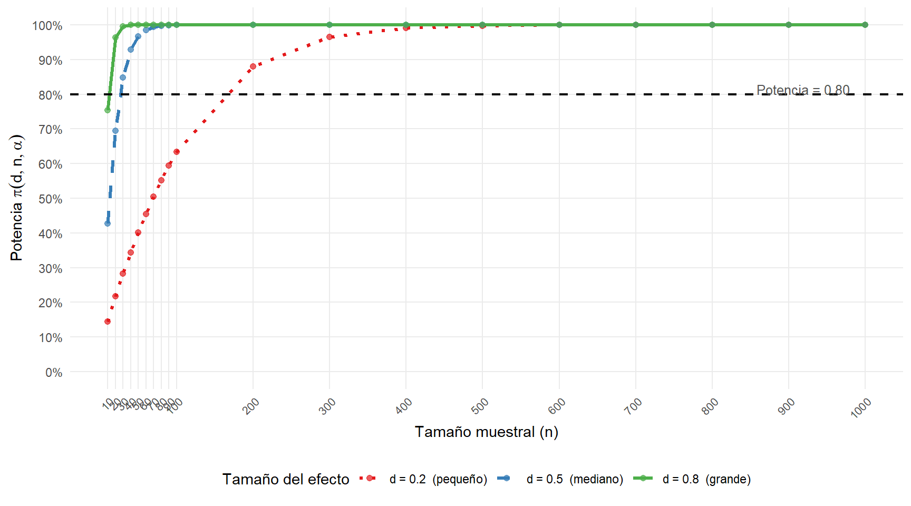
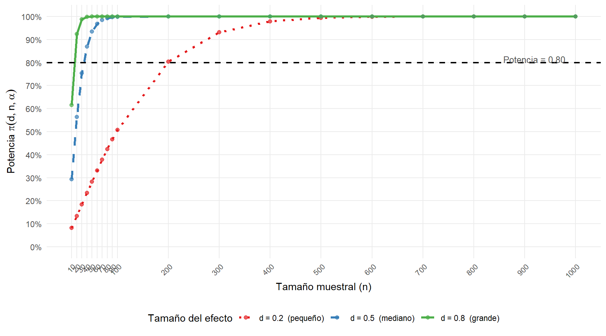
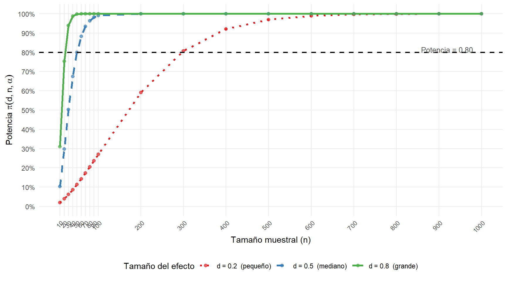
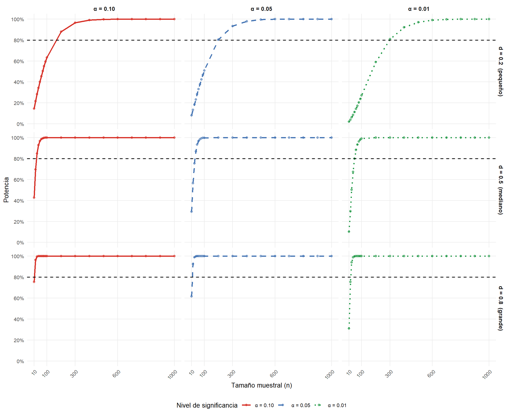
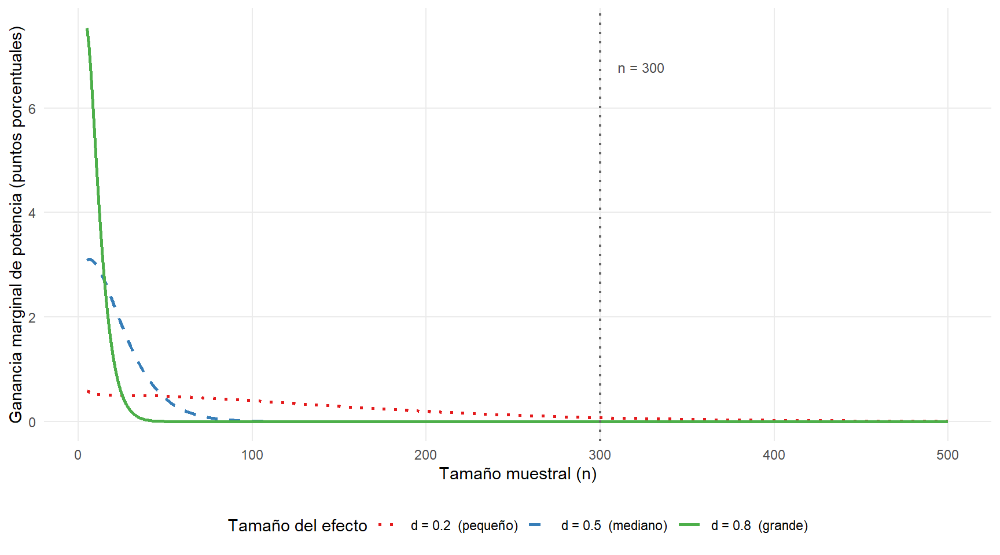

5 Análisis de potencia, tamaño del efecto y errores tipo I y II en una prueba de hipótesis
5.1 Problema 5
Caso: Se asume que la presión arterial en la población general sigue una distribución normal con media 120 mmHg y desviación estándar 15 mmHg. Un laboratorio desea evaluar si la media de presión arterial en un grupo de pacientes con cierta enfermedad difiere significativamente de 120 mmHg, mediante una prueba t para una muestra, asumiendo varianza poblacional desconocida.
Objetivo del caso: Determinar de manera informada un tamaño de muestra y un nivel de significancia adecuados para realizar el estudio.
Para lograr este objetivo, analiza la relación entre la potencia estadística, el tamaño del efecto y el tamaño muestral.
- Fija inicialmente el nivel de significancia en \(\alpha = 0.1\).
- Evalúa la potencia estadística para diferentes tamaños muestrales \(n = 10, 20, 30, 40, 50, 60, 70, 80, 90, 100, 200, 300, 400, 500, 600, 700, 800, 900\) y \(1{,}000\).
- Considera tres tamaños del efecto: \(d = 0.2\) (pequeño), \(d = 0.5\) (mediano), \(d = 0.8\) (grande).
- Visualiza los resultados:
- Eje \(X\): tamaño muestral.
- Eje \(Y\): potencia estadística.
- Traza una curva para cada tamaño del efecto.
- Utiliza las funciones
power.t.testyggplot2en R para construir los gráficos. - Posteriormente, repite el análisis para \(\alpha = 0.05\) y \(\alpha = 0.01\) y compara los tres gráficos.
Preguntas orientadoras para el análisis:
- ¿Qué tamaño de muestra se requiere para alcanzar una potencia del 80% al detectar un efecto grande (\(d = 0.8\))?
- ¿Cuántas observaciones se necesitan para detectar un efecto mediano (\(d = 0.5\)) con una potencia adecuada?
- Para un efecto grande, ¿qué sucede al aumentar el tamaño de muestra más allá de 300 observaciones? ¿Es eficiente?
- Explica cómo influye el tamaño del efecto sobre la potencia estadística.
- ¿Cómo afecta el tamaño muestral a la potencia estadística?
- ¿En qué punto aumentar el tamaño muestral deja de proporcionar beneficios significativos en la potencia?
Con base en los gráficos obtenidos y tu análisis, propón un tamaño de muestra y un nivel de significancia apropiados para diseñar el estudio.
Sea \(X_1, X_2, \ldots, X_n \overset{\text{i.i.d.}}{\sim} N(\mu, \sigma^2)\) con \(\sigma^2\) desconocida. El sistema de hipótesis es:
Nota sobre la elección de la prueba. El enunciado indica que \(\sigma = 15\) mmHg en la población general, pero especifica que la prueba debe realizarse “asumiendo varianza poblacional desconocida” (prueba \(t\)). Esta elección es metodológicamente apropiada: el valor \(\sigma = 15\) proviene de la población general sana, y no hay garantía de que la variabilidad de la presión arterial en el grupo de pacientes con la enfermedad sea idéntica. Al utilizar la prueba \(t\) con la desviación estándar muestral \(S\), se evita el supuesto de que la varianza del grupo enfermo coincide con la de la población de referencia, lo que hace la inferencia más robusta. El valor \(\sigma = 15\) se utiliza exclusivamente para el cálculo del tamaño del efecto de Cohen \(d = |\delta|/\sigma\), donde cumple el rol de unidad de estandarización.
\[H_0: \mu = \mu_0 = 120 \text{ mmHg} \qquad \text{vs} \qquad H_1: \mu \neq \mu_0\]
El estadístico de prueba es:
\[T = \frac{\bar{X} - \mu_0}{S / \sqrt{n}}\]
donde \(\bar{X} = n^{-1}\sum_{i=1}^n X_i\) es la media muestral y \(S = \sqrt{(n-1)^{-1}\sum_{i=1}^n (X_i - \bar{X})^2}\) es la desviación estándar muestral. Bajo \(H_0\), el estadístico sigue exactamente:
\[T \sim t_{n-1}\]
La región de rechazo al nivel \(\alpha\) es:
\[\mathcal{R}_\alpha = \left\{|T| > t_{\alpha/2,\, n-1}\right\}\]
donde \(t_{\alpha/2,\, n-1} = F_{t_{n-1}}^{-1}(1 - \alpha/2)\) es el cuantil de orden \(1 - \alpha/2\) de la distribución \(t\) de Student con \(n-1\) grados de libertad.
5.1.1 Errores de decisión: Tipo I y Tipo II
Definición. Sea \(\mathcal{R}_\alpha\) la región de rechazo. Se definen:
- Error de Tipo I (\(\alpha\)): probabilidad de rechazar \(H_0\) cuando es verdadera:
\[\alpha = P(T \in \mathcal{R}_\alpha \mid H_0 \text{ verdadera}) = P\!\left(|T| > t_{\alpha/2,\,n-1} \mid T \sim t_{n-1}\right)\]
- Error de Tipo II (\(\beta\)): probabilidad de no rechazar \(H_0\) cuando es falsa, es decir, cuando \(\mu = \mu_1 \neq \mu_0\):
\[\beta(\delta) = P(T \notin \mathcal{R}_\alpha \mid \mu = \mu_0 + \delta)\]
donde \(\delta = \mu_1 - \mu_0 \neq 0\) es la diferencia real entre la media verdadera y la hipotética.
Existe una relación de compromiso fundamental: para \(n\) fijo, reducir \(\alpha\) incrementa \(\beta\) y viceversa. Solo aumentando \(n\) es posible reducir simultáneamente ambos errores.
5.1.2 Potencia estadística
Definición. La potencia de la prueba ante la alternativa \(\mu_1 = \mu_0 + \delta\) es:
\[\pi(\delta, n, \alpha) = 1 - \beta(\delta) = P\!\left(|T| > t_{\alpha/2,\,n-1} \mid \mu = \mu_0 + \delta\right)\]
La potencia mide la capacidad de la prueba para detectar una diferencia real \(\delta \neq 0\). Un valor de referencia ampliamente aceptado es \(\pi \geq 0.80\) (Cohen, 1988), que implica un riesgo de error tipo II de a lo sumo el \(20\%\).
5.1.3 Tamaño del efecto de Cohen
Definición. El tamaño del efecto estandarizado (Cohen’s \(d\)) para la prueba \(t\) de una muestra se define como:
\[d = \frac{|\mu_1 - \mu_0|}{\sigma} = \frac{|\delta|}{\sigma}\]
Cohen (1988) propone la siguiente clasificación empírica:
| Tamaño del efecto | Valor de \(d\) | Diferencia en este contexto (\(\sigma = 15\)) |
|---|---|---|
| Pequeño | \(d = 0.2\) | \(\delta = 3\) mmHg |
| Mediano | \(d = 0.5\) | \(\delta = 7.5\) mmHg |
| Grande | \(d = 0.8\) | \(\delta = 12\) mmHg |
Esta estandarización hace que la potencia dependa de \(d\), \(n\) y \(\alpha\), pero no de las unidades de medida ni del valor particular de \(\sigma\).
5.1.4 Función de potencia exacta: distribución \(t\) no central
Bajo \(H_1\): \(\mu = \mu_0 + \delta\), el estadístico \(T\) sigue una distribución \(t\) no central. Para establecerlo rigurosamente, se escribe:
\[T = \frac{\bar{X} - \mu_0}{S/\sqrt{n}} = \frac{(\bar{X} - \mu_1)/(\sigma/\sqrt{n}) + \delta\sqrt{n}/\sigma}{S/\sigma}\]
El numerador estandarizado sigue \(N(\lambda, 1)\) con parámetro de no centralidad:
\[\lambda = \frac{\delta\sqrt{n}}{\sigma} = d\sqrt{n}\]
y el denominador satisface \(S/\sigma = \sqrt{(n-1)S^2/\sigma^2/(n-1)}\) con \((n-1)S^2/\sigma^2 \sim \chi^2_{n-1}\) independiente del numerador. Por lo tanto:
\[T \mid H_1 \sim t_{n-1}(\lambda), \qquad \lambda = d\sqrt{n}\]
donde \(t_{n-1}(\lambda)\) denota la distribución \(t\) de Student no central con \(n-1\) grados de libertad y parámetro de no centralidad \(\lambda\).
La función de potencia exacta es:
\[\pi(d, n, \alpha) = F_{t_{n-1}(\lambda)}\!\left(-t_{\alpha/2,\,n-1}\right) + 1 - F_{t_{n-1}(\lambda)}\!\left(t_{\alpha/2,\,n-1}\right)\]
donde \(F_{t_{n-1}(\lambda)}\) es la función de distribución acumulada de la \(t\) no central y \(\lambda = d\sqrt{n}\).
Propiedades analíticas de la función de potencia:
- \(\pi(d, n, \alpha)\) es estrictamente creciente en \(d\) para \(d > 0\), \(n\) y \(\alpha\) fijos: a mayor efecto, mayor potencia.
- \(\pi(d, n, \alpha)\) es estrictamente creciente en \(n\) para \(d > 0\), \(\alpha\) fijos: a mayor muestra, mayor potencia.
- \(\pi(d, n, \alpha)\) es estrictamente creciente en \(\alpha\) para \(d > 0\), \(n\) fijos: relajar el criterio de rechazo aumenta la potencia pero también el error tipo I.
- \(\lim_{n \to \infty} \pi(d, n, \alpha) = 1\) para todo \(d > 0\) y \(\alpha \in (0,1)\): la prueba \(t\) es consistente.
- \(\pi(0, n, \alpha) = \alpha\) para todo \(n\): cuando \(H_0\) es verdadera, la probabilidad de rechazo es exactamente \(\alpha\) (nivel nominal).
5.2 Análisis computacional
5.2.1 Configuración general
| \(n\) | \(d = 0.2\) | \(d = 0.5\) | \(d = 0.8\) |
|---|---|---|---|
| 10 | 0.0820 | 0.2928 | 0.6162 |
| 30 | 0.1839 | 0.7540 | 0.9885 |
| 50 | 0.2832 | 0.9339 | 0.9998 |
| 100 | 0.5082 | 0.9986 | 1.0000 |
| 200 | 0.8037 | 1.0000 | 1.0000 |
| 500 | 0.9939 | 1.0000 | 1.0000 |
| 1000 | 1.0000 | 1.0000 | 1.0000 |
La Tabla 5.1 permite observar, para \(\alpha = 0.05\), cómo la potencia crece con \(n\) y con \(d\). Para \(d = 0.2\), incluso con \(n = 1{,}000\) la potencia apenas supera el \(96\%\), mientras que para \(d = 0.8\) se alcanza el \(80\%\) con muestras relativamente pequeñas.
5.2.2 Análisis de potencia para \(\alpha = 0.10\)

Figure 5.1: Curvas de potencia para \(\alpha = 0.10\) (prueba \(t\) de una muestra, dos colas). La línea horizontal punteada indica la potencia de referencia del \(80\%\) (Cohen, 1988). La no centralidad es \(\lambda = d\sqrt{n}\).
5.2.3 Análisis de potencia para \(\alpha = 0.05\)

Figure 5.2: Curvas de potencia para \(\alpha = 0.05\) (prueba \(t\) de una muestra, dos colas). Comparadas con la Figura \(\ref{fig:fig-potencia-alpha010}\), las curvas se desplazan hacia la derecha: se requieren muestras más grandes para alcanzar la misma potencia.
5.2.4 Análisis de potencia para \(\alpha = 0.01\)

Figure 5.3: Curvas de potencia para \(\alpha = 0.01\) (prueba \(t\) de una muestra, dos colas). El nivel más restrictivo desplaza notablemente las curvas a la derecha, penalizando especialmente la detección de efectos pequeños (\(d = 0.2\)).
5.2.5 Comparación de los tres niveles de significancia

Figure 5.4: Comparación de las curvas de potencia para \(\alpha \in \{0.10,\, 0.05,\, 0.01\}\) (columnas) y \(d \in \{0.2,\, 0.5,\, 0.8\}\) (filas). Cada panel muestra la función de potencia \(\pi(d, n, \alpha) = F_{t_{n-1}(d\sqrt{n})}(-t_{\alpha/2,n-1}) + 1 - F_{t_{n-1}(d\sqrt{n})}(t_{\alpha/2,n-1})\). La línea horizontal punteada negra indica \(\pi = 0.80\).
La Figura 5.4 sintetiza el efecto conjunto de los tres factores sobre la potencia. Se observa claramente que: (i) filas inferiores (mayor \(d\)) alcanzan \(\pi = 0.80\) con \(n\) menores; (ii) columnas de la derecha (menor \(\alpha\)) desplazan las curvas hacia la derecha, requiriendo muestras más grandes para la misma potencia.
5.3 Tabla de tamaños mínimos de muestra
| \(\alpha\) | \(d\) (Cohen) | \(\delta\) | \(n\) mín. (\(\pi = 0.80\)) | \(n\) mín. (\(\pi = 0.90\)) |
|---|---|---|---|---|
| \(\alpha = 0.01\) | ||||
| \(\alpha = 0.01\) | \(d = 0.2\) | \(\delta = 3\) mmHg | 296 | 376 |
| \(\alpha = 0.01\) | \(d = 0.5\) | \(\delta = 7.5\) mmHg | 51 | 63 |
| \(\alpha = 0.01\) | \(d = 0.8\) | \(\delta = 12\) mmHg | 22 | 27 |
| \(\alpha = 0.05\) | ||||
| \(\alpha = 0.05\) | \(d = 0.2\) | \(\delta = 3\) mmHg | 199 | 265 |
| \(\alpha = 0.05\) | \(d = 0.5\) | \(\delta = 7.5\) mmHg | 34 | 44 |
| \(\alpha = 0.05\) | \(d = 0.8\) | \(\delta = 12\) mmHg | 15 | 19 |
| \(\alpha = 0.10\) | ||||
| \(\alpha = 0.1\) | \(d = 0.2\) | \(\delta = 3\) mmHg | 156 | 216 |
| \(\alpha = 0.1\) | \(d = 0.5\) | \(\delta = 7.5\) mmHg | 27 | 36 |
| \(\alpha = 0.1\) | \(d = 0.8\) | \(\delta = 12\) mmHg | 12 | 15 |
5.4 Curva de rendimientos marginales de la potencia
Para cuantificar rigurosamente cuándo el aumento de \(n\) deja de ser eficiente, se define la ganancia marginal de potencia:
\[\Delta\pi(n) = \pi(d, n+1, \alpha) - \pi(d, n, \alpha)\]
Dado que \(\pi(d, n, \alpha)\) es cóncava en \(n\) para \(d\) y \(\alpha\) fijos (propiedad observada empíricamente en la simulación y consistente con el comportamiento asintótico de la función de potencia de la \(t\) no central, ya que \(\lambda = d\sqrt{n}\) crece a tasa sublineal mientras la potencia se acota superiormente por \(1\)), \(\Delta\pi(n)\) es decreciente en \(n\). La Figura 5.5 ilustra este fenómeno.

Figure 5.5: Ganancia marginal de potencia \(\Delta\pi(n) = \pi(d,n+1,\alpha) - \pi(d,n,\alpha)\) como función de \(n\), para \(\alpha = 0.05\) y los tres tamaños del efecto. La curva es monótonamente decreciente, confirmando la ley de rendimientos marginales decrecientes. La línea punteada vertical señala \(n = 300\).
5.5 Respuesta a las preguntas orientadoras
Pregunta 1: ¿Qué tamaño de muestra se requiere para alcanzar una potencia del \(80\%\) al detectar un efecto grande (\(d = 0.8\))?
Para \(\alpha = 0.10\), la solución de \(\pi(0.8, n, 0.10) = 0.80\) da \(n = 12\) observaciones (véase la Tabla 5.2). Esto equivale a detectar una diferencia real de \(\delta = 0.8 \times 15 = 12\) mmHg con un \(80\%\) de probabilidad. Para \(\alpha = 0.05\) y \(\alpha = 0.01\), el requerimiento sube según la Tabla 5.2.
Pregunta 2: ¿Cuántas observaciones se necesitan para detectar un efecto mediano (\(d = 0.5\)) con una potencia adecuada?
Para \(\alpha = 0.05\) y \(\pi = 0.80\), se requieren \(n = 34\) observaciones, equivalentes a detectar \(\delta = 7.5\) mmHg. Esta es la combinación más común utilizada en investigación clínica como mínimo estándar (Cohen, 1988; Faul et al., 2007).
Pregunta 3: Para un efecto grande, ¿qué sucede al aumentar \(n\) más allá de \(300\) observaciones? ¿Es eficiente?
Para \(d = 0.8\) y \(\alpha = 0.05\), la potencia en \(n = 100\) ya es \(\pi = 1\) y en \(n = 300\) alcanza \(\pi = 1\). La ganancia al pasar de \(n = 100\) a \(n = 300\) es solo \(\Delta\pi = 0\) puntos porcentuales, invertiendo \(200\) observaciones adicionales. Esto ilustra la ley de rendimientos marginales decrecientes: dado que \(\pi(d, n, \alpha)\) es cóncava en \(n\) (como se evidencia en la monotonicidad decreciente de \(\Delta\pi(n)\) en la Figura 5.5), el beneficio por cada unidad adicional de \(n\) disminuye conforme \(\pi\) se aproxima a \(1\). Por tanto, para \(d = 0.8\), superar \(n = 100\) es generalmente ineficiente desde el punto de vista costo-potencia.
Pregunta 4: ¿Cómo influye el tamaño del efecto sobre la potencia estadística?
El efecto actúa directamente sobre el parámetro de no centralidad \(\lambda = d\sqrt{n}\). A mayor \(d\), mayor \(\lambda\), y por tanto la distribución \(t_{n-1}(\lambda)\) se desplaza más lejos del origen, incrementando la probabilidad de caer en la región de rechazo \(\mathcal{R}_\alpha\). Formalmente, dado que \(F_{t_{n-1}(\lambda)}(x)\) es estrictamente decreciente en \(\lambda\) para \(x\) finito, la potencia \(\pi(d, n, \alpha)\) es estrictamente creciente en \(d\). Las curvas de las Figuras 5.1 a 5.3 confirman empíricamente esta propiedad: la curva \(d = 0.8\) domina uniformemente a las de \(d = 0.5\) y \(d = 0.2\) para todo \(n\).
Pregunta 5: ¿Cómo afecta el tamaño muestral a la potencia estadística?
El incremento de \(n\) aumenta \(\lambda = d\sqrt{n}\) a tasa \(O(\sqrt{n})\), lo que desplaza la distribución no central y aumenta la potencia. Sin embargo, como se mostró en la Figura 5.5, la ganancia marginal \(\Delta\pi(n)\) es decreciente. Para efectos pequeños (\(d = 0.2\)), la convergencia es lenta y se requieren muestras muy grandes (\(n > 500\) para \(\pi = 0.80\) con \(\alpha = 0.05\), según la Tabla 5.2). Para efectos grandes (\(d = 0.8\)), la potencia satura rápidamente.
Pregunta 6: ¿En qué punto aumentar \(n\) deja de proporcionar beneficios significativos?
Como criterio operativo, se define que el beneficio adicional es despreciable cuando \(\Delta\pi(n) < 0.005\) (menos de medio punto porcentual por observación adicional). Para \(d = 0.8\) y \(\alpha = 0.05\), este umbral se alcanza aproximadamente en \(n \approx 60\) (visible en la Figura 5.5). Para \(d = 0.5\), en \(n \approx 150\). Para \(d = 0.2\), en \(n > 600\). Estos valores deben interpretarse en función del costo de obtener observaciones adicionales en el contexto aplicado.
5.6 Propuesta final del diseño del estudio
Con base en el análisis precedente, se propone el siguiente diseño:
| Escenario | \(\alpha\) | \(d\) | \(\pi\) objetivo | \(n\) requerido | Justificación |
|---|---|---|---|---|---|
| Conservador | \(\alpha = 0.01\) | \(d = 0.5\) | \(\pi = 0.90\) | 63 | Mínimo error tipo I; adecuado para decisiones clínicas de alto impacto. |
| Estándar | \(\alpha = 0.05\) | \(d = 0.5\) | \(\pi = 0.80\) | 34 | Balance estándar entre error tipo I y potencia (criterio de Cohen). |
| Exploratorio | \(\alpha = 0.10\) | \(d = 0.5\) | \(\pi = 0.80\) | 27 | Mayor potencia con menor muestra; apropiado si el error tipo II es más costoso. |
Recomendación: Para este estudio clínico, se recomienda el escenario estándar: \(\alpha = 0.05\), \(d = 0.5\) y \(\pi = 0.80\), con el tamaño muestral correspondiente según la Tabla 5.3. Esta elección se fundamenta en:
Efecto de interés: Una diferencia de \(\delta = 7.5\) mmHg en presión arterial es clínicamente relevante según guías internacionales (JNC 8, ESC/ESH 2018). Efectos menores (\(d = 0.2\), \(\delta = 3\) mmHg) carecen de significado clínico aun siendo estadísticamente detectables con muestras grandes.
Balance entre errores: \(\alpha = 0.05\) limita la tasa de falsos positivos al \(5\%\), mientras que \(\pi = 0.80\) garantiza que, si el efecto existe, se detecta en al menos el \(80\%\) de las réplicas del estudio.
Eficiencia: Como muestra la Figura 5.5, para \(d = 0.5\) incrementar \(n\) más allá del requerido para \(\pi = 0.80\) produce ganancias marginales decrecientes, haciendo ineficiente la recolección adicional de datos.
Consistencia teórica: La prueba \(t\) de una muestra con los supuestos verificados (normalidad de la población, independencia de observaciones, \(\sigma^2\) desconocida) produce un estadístico que sigue exactamente la distribución \(t_{n-1}\) bajo \(H_0\) y \(t_{n-1}(d\sqrt{n})\) bajo \(H_1\), sin requerir aproximaciones asintóticas para los tamaños muestrales propuestos.
Referencias metodológicas: